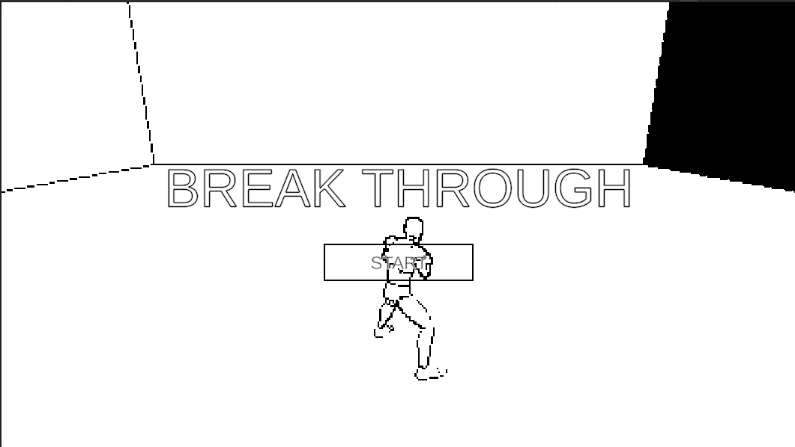
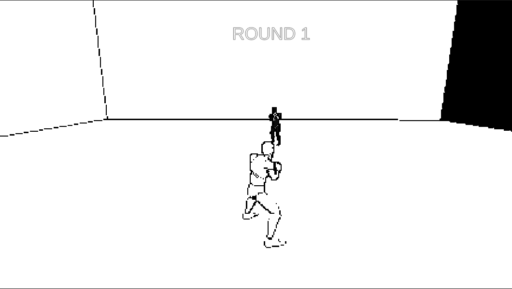
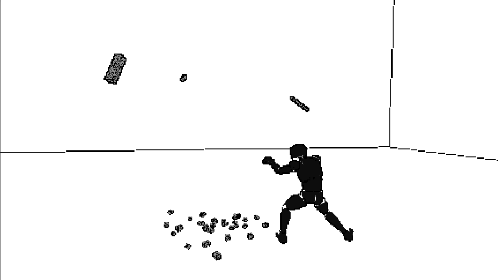
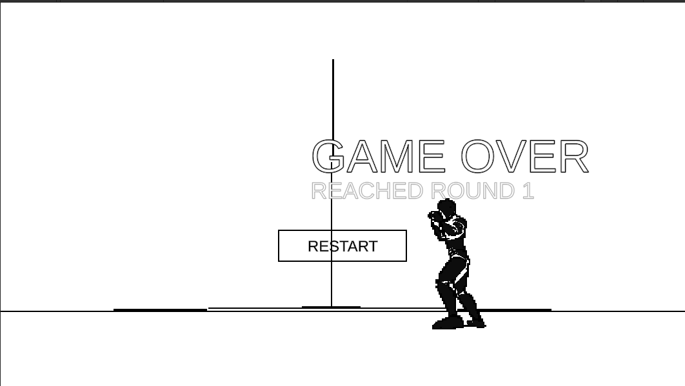
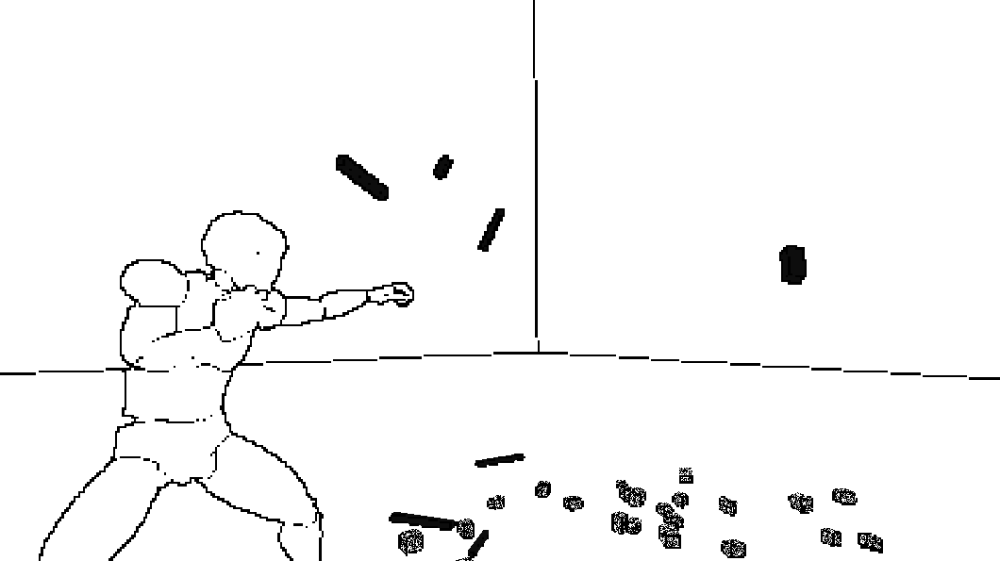

§ 1About
문제 해결을 위해 협업의 가치와 기술적 깊이를 중요하게 생각하는 풀스택 개발자입니다.
LLM이 세상에 막 나왔을 때부터 로컬 AI 서비스를 직접 운영해 왔고
요즘은 AI 에이전트 도구를 직접 만드는 일에 몰두하고 있습니다.
재미있어 보이는 건 참을 수 없습니다.
RB-Ware의 로봇 제어 구현(§ 4)을 제외한
모든 작업은 AI 코딩 파트너(Claude · GPT · Codex · opencode)와 함께 만들어졌습니다.
AI는 제가 가장 잘 쓰는 도구이고, 결과물의 품질과 의사결정에 대한 책임은 제가 집니다.
§ 2Interests
-
AI 에이전트 & 로컬 LLM
2022년 ChatGPT 등장 이후 로컬 LLM × text2sql 서비스를 개인 사업으로 운영.
RWKV-4, LLaMA 1·2 등 당시 공개된 모델을 실제 프로덕션에 접목. 오픈소스 기여로alasdairforsythe/tokenmonster(Go SOTA 토크나이저),backnotprop/plannotator(에이전트 계획·리뷰 도구)에 PR을 보냈고,
최근에는 codex-mcp / codex-plugin / claude-agent-mcp / easy-opencode / dm-plz 등 MCP 생태계 도구를 직접 제작합니다. -
풀스택 TypeScript
NestJS · React / Next.js · React Native / Expo · SvelteKit. 판도플랫폼 Gen AI 베리어프리 키오스크, 엔피엘솔루션 Better Auth 시스템,
플레이모어 아미고 앱 결제·홈페이지 리뉴얼에서 실무 적용. -
실시간 통신 & 접근성
WebRTC · LiveKit · RTSP · PTZ. 티와이이엔지에서 Go + WebRTC로 RTSP 카메라 지연 30초 → 1초 단축.
개인 외주 사업으로 pion(Go WebRTC 프레임워크) 기반 rtsp2webrtc 구현 및 PTZ 카메라 원격 제어. -
협동로봇 & 산업 자동화Solo Build
RB-Ware (한국 협동로봇 용접 자동화 1위, 레인보우로보틱스 파트너)에서 Flutter로 로봇 조작 앱, Unity로 티칭·시뮬레이션 UI 개발. 로봇 ↔ 컨트롤러 간 TCP / MQTT 실시간 통신 프로토콜 직접 구현.
본 포트폴리오에서 유일한 AI 비개입 구현. -
인증 & OAuth 통합
Better Auth + NestJS + PostgreSQL 기반 네이버·카카오·구글 연동. Supabase 네이버 커스텀 OAuth 프로바이더(
supabase-custom-oauth-test) 공개. -
게임 개발
Unity 6.3 URP 기반 3D 타이밍 카운터 액션 게임 Break Through 개발. 상세는 § 4 참조.
-
AI × 금융
Cryptocurrency_with_ai— FastAPI + AI 자동매매 실험.
§ 3Selected Work
| Project | Role | Description |
|---|---|---|
| easy-opencode | Author | opencode를 쉽게 시작하기 위한 LSP + AST-grep 플러그인 번들 |
| codex-mcp | Author | OpenAI Codex SDK 기반 MCP 서버 — ChatGPT OAuth 로그인, API 키 불필요 |
| codex-plugin | Author | Claude Code용 OpenAI Codex 통합 플러그인 (구조화 JSON 출력) |
| claude-agent-mcp | Author | Claude Agent SDK를 래핑한 MCP 서버 |
| dm-plz | Author | Telegram / Discord로 Claude Code 알림을 전달하는 MCP |
| play-tag | Author | 경도 — Flutter + BLE 기반 오프라인 팀 감지 술래잡기 앱 (Supabase Realtime) |
| RTA(비공개) | Author | Real-Time Audio Translator — Electron + Soniox로 시스템 오디오 실시간 번역/자막 오버레이 |
| alasdairforsythe/tokenmonster | Contributor (PR) | Go 기반 SOTA 토크나이저 — 로컬 LLM × text2sql 시기 기여 |
| backnotprop/plannotator | Contributor (PR) | AI 코딩 에이전트 계획·코드 리뷰 도구 |
| Break Through | Author | Unity 6.3 URP 3D 타이밍 카운터 액션 (§ 4 참조) |
| Cryptocurrency_with_ai | Author | FastAPI + AI 자동매매 실험 |
§ 4Game — Break Through
Unity 6.3 URP 기반 3D 타이밍 카운터 액션 게임. 흑백 픽셀 아웃라인 스타일을 커스텀 셰이더로 구현했습니다.





주요 시스템
- GameManager — 단일 씬 상태머신 (Title → Fighting → Choosing → Dying → GameOver)
- PlayerCombat — 3단 콤보 상태머신, 애니메이션 이벤트 릴레이 패턴으로 Animator ↔ 전투 코드 분리
- DebrisPool — 인덱스 기반 오브젝트 풀링으로 구현
- PixelOutlineFeature — 커스텀 URP ScriptableRendererFeature. ToonCrack·Dither 셰이더로 레트로 픽셀 아웃라인 렌더링
§ 5Tech Stack
§ 6Contact
- GitHub github.com/j-token
- Blog i-love-coding.tistory.com
- Game j-token.itch.io/break-through